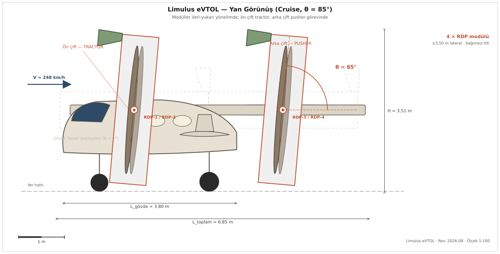

Karar kuralları ölçümden önce dondurulan bir tasarım ve öğrenme programı. Elli üç karar belgesi, on dört koşu dizininde yüz kırk dört eğitim koşusu, ve raporlanan her sayıyı yeniden üreten betikler.

LIMULUS, dört bağımsız eğimlenen rotor modülü taşıyan modüler bir eVTOL tasarımıdır. Program bu tasarımı savunmaya değil, sınamaya kuruludur. Senkron eğim, ikili eğim ve lift-cruise varyantları ayrı simülatörler değil, aynı simülatörün kısıtlanmış hâlleridir, dolayısıyla olurlu kümeleri iç içe geçmiştir ve kısıtlı bir varyant kısıtsızından iyi çıktığında bunun bir çözücü kusuru olduğu kanıtlanabilir.
Her kampanyanın karar kuralları ölçüm görülmeden dondurulmuş ve tarihli bir belgeye yazılmıştır. Sonuçlar ayrı bir bölüm olarak eklenir, ön kayıt gövdesi hiç düzenlenmez. Bir sonuç sonradan yanlış çıktığında hatalı cümleler silinmez, üzerine tarihli bir düzeltme yazılır. Bu programda böyle bir düzeltme bir kez yapıldı ve bulguyu güçlendirdi.
Aracın geometrisi ve başarım noktası, altı serbestlik dereceli model, ve dört varyantın aynı simülatörden nasıl türetildiği. Her sayı tek kaynaktan, geometri.py.
Elli üç belge, altı kısım. Başarısız denemeler ve bulunan kusurlar da burada durur, tam da bir sonraki denemede aynı yola girilmesin diye.
On dört koşu dizini, yüz kırk dört koşu. Öğrenme eğrileri ve seviye dağılımları doğrudan arşivlenmiş günlüklerden çizilir, ara bir özet dosyasından değil.
GitHub deposu, Zenodo DOI'si, yeniden üretim komutları ve lisanslar. Arşivlenen betikler değiştirilmedi, bu iddia edilmedi ölçüldü.
Dördü de aynı dijital ikizden ve aynı koşulardan besleniyor. Hiçbiri bir diğerinin bölümlerini, tablolarını ya da figürlerini yinelemiyor.
| Kod | Başlık | Dergi | Durum |
|---|---|---|---|
| M1 | Rakip eVTOL Kontrol Mimarilerinin Tek Simülatörün Kısıtlanmış Hâlleri Olarak Karşılaştırılması. İç İçe Geçmişlik Garantili ve Ön Kayıtlı Bir Çerçeve | Simulation Modelling Practice and Theory |
v8 · gönderime hazır |
| M5 | Uçuş Kontrolü İçin Öğrenme Ortamı Tasarımında Beş Sessiz Kusur. Ölçülmüş Bir Vaka Çalışması | Robotics and Autonomous Systems |
v6 · gönderime hazır |
| M2 | Rim-Drive eVTOL Rotorlarının Ön Tasarımında Özgül Güç ve Kütle Tabanı | Aerospace Science and Technology |
hakem sürecinde · 10.08.2026 |
| M6 | Dört Rotorlu Bir Tilt-Rotor eVTOL Kaç Bağımsız Tilt Eksenine İhtiyaç Duyar? Ön Kayıtlı Bir Olumsuz Sonuç | Advances in Engineering Software |
hakem sürecinde · 11.08.2026 |